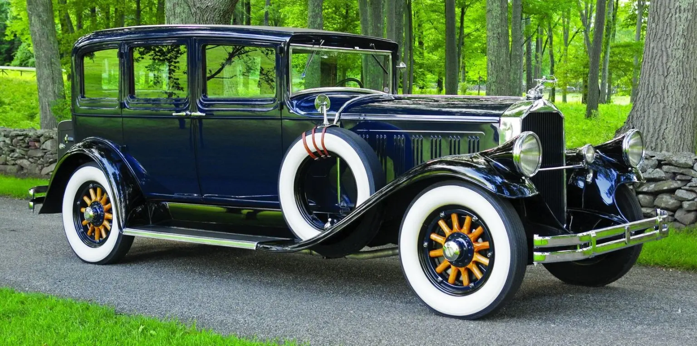

1929 pierce-arrow

The Motor Car Company was an American motor vehicle manufacturer based in Buffalo, New York, active from 1901 to 1938. Although best known for its expensive luxury cars, Pierce-Arrow also manufactured commercial trucks, fire trucks, boats, camp trailers, motorcycles, and bicycles.[2]
The forerunner of Pierce-Arrow was established in 1865 as Heinz, Pierce and Munschauer. The company was best known for its household items, especially its delicate, gilded birdcages.[3] In 1872, George Norman Pierce bought out the other two principals of the company, changed the name to the George N. Pierce Company, and in 1896 added bicycles to the product line. The company failed in its attempt to build a steam-powered car in 1900 under license from Overman, but by 1901, had built its first single-cylinder, two-speed, no-reverse Motorette.[4] In 1903, it produced a two-cylinder car, the Arrow.
In 1904, Pierce decided to concentrate on making a larger, more luxurious car for the upscale market, the Great Arrow. This became the company's most successful product. The solidly built, four-cylinder car won the Glidden Tour in 1905, an endurance run to determine and celebrate the most reliable car. Thirty-three cars entered the 350-mile race from New York City to Bretton Woods, New Hampshire; the race was won by Percy Pierce in a Great Arrow.[5]
The noted industrial architect Albert Kahn designed the Pierce Arrow Factory Complex at Elmwood Avenue and Great Arrow Avenue in about 1906. It was listed on the National Register of Historic Places in 1974.[6] George Pierce sold all rights in the company in 1907, and he died three years later. In 1908, Pierce Motor Company was renamed as the Pierce-Arrow Motor Car Company.